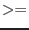

| invalidInstrument | error | |
| The value of the INSTRUME attribute
of the spectral file is not EMOS1, EMOS2 or EPN. (This indicates a bug - raise an SPR) | ||
| invalidArraySize | error | |
| The detector map array is not 2-dimensional as expected. | ||
| invalidAreaEnergyGrids | error | |
| The number of elements in the computed area vector do not match that in the energy grid. This indicates a bug - raise an SPR. | ||
| mapXRangeInvalid | error | |
| The requested X-range for the
flat or psf detector map arrays is not such that detxmin 
detxmax. (This indicates a bug, so an SPR should be raised). | ||
| mapYRangeInvalid | error | |
| The requested Y-range for the
flat or psf detector map arrays is not such that detymin
detymax. (This indicates a bug, so an SPR should be raised). | ||
| mapSizeInvalid | error | |
| The number of pixels specified for
the flat or psf detector maps is zero (This indicates a bug, so an SPR should be raised). | ||
| InvalidSourcePosition | error | |
| The source does not lie within the region corresponding to that of the detector map. | ||
| sourceCoordTypeInvalid | error | |
| The value of the parameter sourcecoords is not a valid type (this indicates a bug - raise an SPR) | ||
| NoPatterns | error | |
| There are no patterns in the internal list (this indicates a bug - raise an SPR.) | ||
| InvalidWCSAxes | error | |
| The detector map array WCS axis types were not DETX and DETY. | ||
| DSSNotFound | error | |
| The input spectrum does not contain a mandatory data subspace component. Arfgen needs this information to determine the position of the source on the detector among other things. Ensure that the writedss option is set true within the evselect parameters | ||
| RegionInvalid | error | |
| The data subspace in the input spectrum either doesn't contain region information or it is unbounded in detector coordinates. | ||
| ShapeNotHandled | error | |
| The data subspace contains a shape which is not recognised by arfgen | ||
| NoRmfTablePresent | error | |
| The rmf file specified doesn't contain an
RMF table from which the energies can be extracted | ||
| ArfObjError | error | |
| An error has occurred within arfgen which is not
understood. The most likely reason is that the software environment or
the input datafile is corrupt in some way. Try redefining the SAS
environment, including CCF directories and regenerate the spectrum. | ||
| BadFilterName | error | |
| The Filter keyword in the spectrum header is either
missing or doesn't match a known filter | ||
| negativeDetmapPixel | warning | |
| A pixel within the detector map has a negative value.
corrective action: Continue processing - the pixel would provide negative weighting to the total ARF | ||
| regUnbounded | warning | |
| The selected regions are unbounded along the positive or negative directions along either the DETX, DETY, X or Y axes.
corrective action: continue | ||
| detmapXboundsExceeded | warning | |
| The extent of the selected region projected along the DETX axis exceeds the detector map bounds for that axis.
corrective action: continue | ||
| detmapYboundsExceeded | warning | |
| The extent of the selected region projected along the DETY axis exceeds the detector map bounds for that axis.
corrective action: continue | ||
| InvalidPosWCSInfo | warning | |
| One or more of the global attributes REFXCTYP, REFXCRPX, REFXCRVL, REFXCDLT,
REFYCTYP, REFYCRPX, REFYCRVL, REFYCDLT are not present in the spectrum dataset.
corrective action: Provide a dummy WCS setting, for the POS coordinate system and continue. The RA/DEC reference pointing, corresponding to REFXCRVL and REFYCRVL, is instead taken from the attributes RA_PNT and DEC_PNT | ||
| zeroSumDetmap | warning | |
| This means that the detector map has all zero elements. The resultant ARF will be full of zeroes. This is unimportant
if arfgen
has been called from backscale
but is a major error
if arfgen
is being used standalone.
If a 'flat' or 'psf' map has been used it may be that more elements are needed to fully describe the source region. An alternative possibility is that
the attitude reconstruction is bad for this observation.
corrective action: continue | ||
| zeroRenorm | warning | |
| Similar to 'zeroSumDetmap' but may mean that no detector map pixels lie within the boundaries of a CCD. This can occur if the backscale calculation is performed on a source region whose centre lies on a chip gap.
corrective action: continue | ||
| NoBadPixLocations | warning | |
| The bad pixel file hasn't been specified on the command line or is invalid. This means that no correction for bad pixels will be applied
corrective action: continue | ||
| EEoutofBounds | warning | |
| The circular PSF model is valid for energies upto 9keV for the MOS and 10.5 keV for EPIC-PN. This warning reminds the user that the higher energies in the ARF will be corrected for the encircled energy fraction using the 9keV PSF, which is at best an approximation
corrective action: continue | ||
| EnergyOutsideValidityRange | warning | |
| This message comes from the CAL
package and normally means that the PSF is being evaluated outside its
standard range. This is usually harmless
corrective action: continue | ||
| OffaxisAngleOutsideValidityRange | warning | |
| This means that a quantity, usually the PSF, is being evaluated at an off-axis angle outside those at
which the quantity has been calibrated. The quantity relevant to the
furthest off-axis calibration point is returned.
corrective action: continue | ||
| NoPPSVersion | warning | |
| The input spectrum doesn't contain the
pipeline processing version. This means that the s/w doesn't know whether it
should apply the out-of-time correction or not. See section 5.11
corrective action: continue without applying out-of-time correction | ||
| NonStandardPatterns | warning | |
| The pattern fractions used to scale the detector Quantum
Efficiency are defined for a set number of standard pattern ranges (0, 0-4,
1-4, 0-12). The task can not cope with a different pattern range and so defaults to using the full set of patterns
corrective action: assume that the spectrum contains the full range of patterns | ||
| UnknownModeString | warning | |
| If the spectrum contains an
observing mode (in the keyword SUBMODE) which is not recognised then the
software assumes that the common PrimeFullWindow mode was in use. The
mode is used to calculate certain calibration quantities such as the
pattern fractions
corrective action: PrimeFullWindow | ||
| BadModePatternCombination | warning | |
| This means that the pattern selection
in the input spectrum is not calibrated for the observing mode. e.g. Any
pattern selection other than 0-4 will cause this warning to be issued for
PN timing mode spectra.
corrective action: recreate the spectrum using the recomended pattern range | ||
| NegBackscale | warning | |
| The area of the spatial region (BACKSCAL) has
been calculated to be negative. This can happen and usually means that the
chosen area has no good pixels due to it being outside the field-of-view or
obliterated by bad pixels, bad columns or chip gaps. The program sets the
BACKSCAL value to zero in the output file. | ||